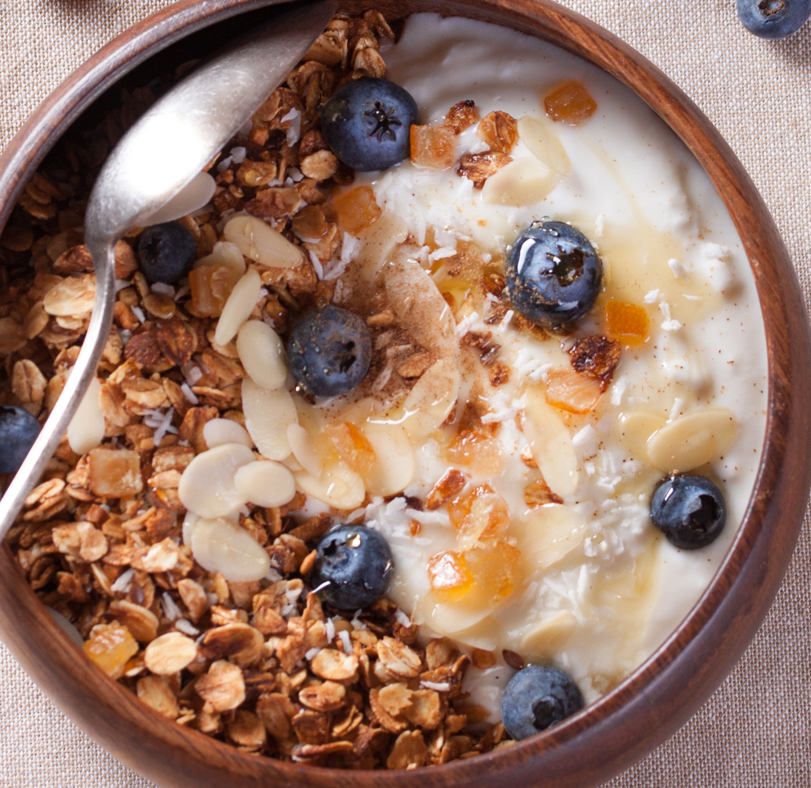

Homemade Muesli

Homemade Muesli
Muesli is a nutritious, no-cook breakfast that's packed with fiber, healthy fats, and natural sweetness. It's a great way to fuel your day and can be customized with your favorite ingredients.
Ingredients
- 1 cup rolled oats
- 1/4 cup mixed nuts (e.g., almonds, walnuts, hazelnuts), chopped
- 1/4 cup dried fruit (e.g., raisins, cranberries, or apricots), chopped
- 1 tablespoon chia seeds or flax seeds (optional, for added nutrition)
- 1/4 teaspoon ground cinnamon (optional, for flavor)
- 1/2 cup milk (dairy or plant-based) or yogurt
- Fresh fruit (e.g., berries, banana slices) for topping (optional)
- Honey or maple syrup (optional, for sweetness)
Instructions
- In a bowl, combine the rolled oats, chopped nuts, dried fruit, chia seeds (if using), and cinnamon. Stir to combine.
- Pour in the milk or yogurt and mix well. You can adjust the amount of liquid based on your desired consistency (more liquid for a creamier texture).
- Let It Sit. For best results, let the muesli sit for at least 30 minutes (or overnight) in the fridge. This allows the oats to soften and absorb the liquid, creating a delicious, creamy texture. If you're in a rush, you can eat it immediately.
- Serve. Before serving, top the muesli with fresh fruit, a drizzle of honey or maple syrup, and any other toppings you like.
Home